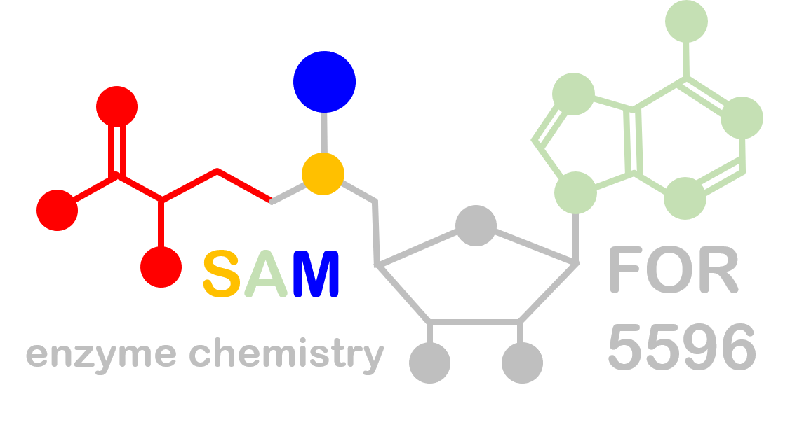

Research Data Management in FOR5596
 Within FOR5596 state-of-the-art research data management is developed and implemented for all research projects. The underlying goal is to create highly annotated, structured data sets that are in line with FAIR principles. This includes the use of standardized data models as well as the development of new data standards. Ultimately, this leads to high-quality data assets that are re-analyzable and reusable for future research projects.